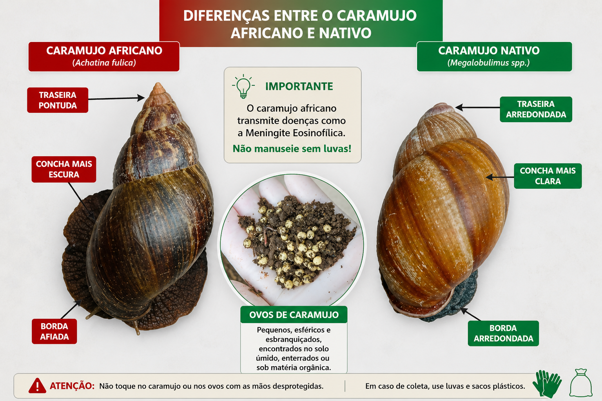
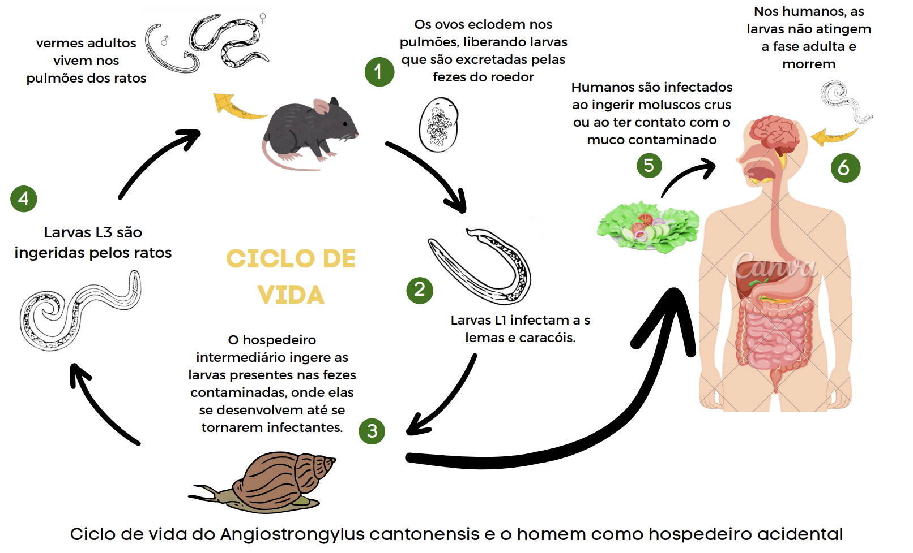

Cuidado com o Caramujo Africano!
Selecione o módulo conforme a sua dúvida ou situação.
Use luvas, saco plástico ou pinça. O caramujo africano pode hospedar parasitas causadores de meningite.
O que é o caramujo africano?
Achatina fulica — molusco gastrópode terrestre originário da África Oriental, introduzido no Brasil e capaz de se reproduzir rapidamente, especialmente em ambientes úmidos.
(Achatina fulica)Caramujo nativo
(Megalobulimus spp.)
Ovos: pequenos, esféricos e esbranquiçados, semienterrados no solo úmido ou sob matéria orgânica, em grupos de até 400.
Comparativo visual: caramujo africano × caramujo nativo
O quadro acima traz as principais diferenças. A imagem abaixo complementa a identificação visual para ajudar a população a não confundir espécies nativas com o caramujo africano.

Material educativo elaborado pela Vigilância Epidemiológica/SVES/SEMUS São Luís.
Características gerais
10 a 20 cm — muito maior que os nativos
Ativo à noite; esconde-se sob folhas e entulho
4–5 posturas/ano, 50–400 ovos; vida de 5–6 anos
Aumenta no período chuvoso — MA é região de alto risco
Por que é considerado praga?
- Destrói lavouras, hortas e jardins com voracidade
- Compete com moluscos nativos e desequilibra ecossistemas
- Pode hospedar parasitas relacionados à meningite eosinofílica e à enterite abdominal
- Conchas abandonadas podem acumular água e servir de criadouro para mosquitos
Por que aumentam no período chuvoso?
O caramujo africano se adapta melhor a ambientes úmidos. No período chuvoso, há mais umidade, abrigo e matéria orgânica disponível, o que favorece a circulação, a alimentação e a reprodução.
- Folhas acumuladas, entulho, madeira, lixo e vegetação alta funcionam como abrigo.
- O solo úmido facilita a postura e a sobrevivência dos ovos.
- Por isso, a limpeza ambiental antes e durante o período chuvoso reduz a proliferação.
Ciclo de transmissão
Entenda como o parasita Angiostrongylus cantonensis chega ao ser humano.
Imagem do ciclo de transmissão
O ciclo mostra como o parasita pode circular entre ratos, caramujos e humanos.

Fonte da imagem: Informe técnico para controle do caracol ou "caramujo africano" — Governo da Bahia.
As 6 etapas do ciclo
- Ratos infectados — vermes adultos vivem nos pulmões dos ratos; larvas L1 são excretadas pelas fezes.
- O caramujo se infecta — larvas L1 infectam o Achatina fulica e se desenvolvem em larvas L3 infectantes.
- Hospedeiro intermediário — larvas L3 ficam no tecido e na baba do caramujo.
- Ratos ingerem o molusco — fechando o ciclo no hospedeiro definitivo.
- Humanos se infectam acidentalmente — ao consumir alimentos contaminados pela baba sem higienização adequada.
- No ser humano — larvas migram ao sistema nervoso central, causando meningite eosinofílica. Não atingem a fase adulta.
Como NÃO ocorre a transmissão
- Pelo contato visual ou por passar perto do caramujo
- Pelo contato na pele íntegra sem levar à boca
- Por picada ou mordida (o caramujo não morde nem expele veneno)
- De pessoa para pessoa
Riscos à saúde
A principal doença é a meningite eosinofílica, causada por Angiostrongylus cantonensis.
O caramujo sempre transmite meningite?
Não. O caramujo africano não "produz" meningite sozinho. Para representar risco de transmissão, ele precisa estar contaminado por um verme específico, chamado Angiostrongylus.
Em 2025, São Luís participou de uma ação de monitoramento realizada pela Fiocruz em parceria com o LACEN-MA e a SEMUS, com coleta e análise de caramujos em diferentes pontos da cidade.
Isso ajuda a tranquilizar a população, mas não significa que os cuidados possam ser abandonados. O caramujo continua sendo uma espécie invasora e pode se contaminar posteriormente no ambiente. Por isso, o manejo correto, a limpeza dos quintais e a higienização dos alimentos continuam sendo fundamentais.
Como ocorre a transmissão?
O caramujo africano pode atuar como hospedeiro intermediário de parasitas do gênero Angiostrongylus. A infecção humana ocorre principalmente pela ingestão acidental de muco contaminado em alimentos mal higienizados ou pelo consumo de moluscos crus ou malcozidos.
Fonte da imagem: Informe técnico para controle do caracol ou "caramujo africano" — Governo da Bahia.
Sintomas da meningite eosinofílica
Aparecem de 1 a 3 semanas após a exposição:
- Dor de cabeça intensa e persistente
- Febre · Rigidez no pescoço
- Náusea e vômito · Sensibilidade à luz
- Formigamento ou dormência na pele
- Raramente: confusão mental ou paralisia
Grupos de maior atenção
- Crianças pequenas (levam mãos e objetos à boca)
- Idosos e imunossuprimidos
- Trabalhadores de hortas, jardins e áreas verdes
- Cães e gatos que ingerem o caramujo ou sua baba
Achei um caramujo — o que fazer?
Responda as perguntas abaixo para receber a orientação correta.
Mitos e verdades
Prevenção no dia a dia
Cuidados com alimentos
- Lave bem verduras, legumes e frutas em água corrente antes de consumir
- Use solução de hipoclorito: 1 colher de sopa de água sanitária (2,5%) por litro, deixe 15 min, enxágue
- Nunca consuma moluscos crus ou malcozidos
Cuidados no quintal e jardim
- Elimine entulho, folhas acumuladas e materiais empilhados — principais abrigos
- Faça raspagem do solo para encontrar ovos semienterrados
- Lave as mãos após trabalhar no jardim · Não ande descalço em áreas infestadas
- Reforce inspeções antes e após o período chuvoso
Sal, água sanitária e cal: quando usar e quais cuidados?
-
Sal grosso ou sal de cozinha: pode ser usado em pequena quantidade dentro do saco plástico fechado, nunca espalhado no terreno. O uso no solo causa salinização, dificulta a absorção de água pelas plantas e pode contribuir para erosão do solo.
-
Água sanitária/cloro: pode ser usada como medida complementar dentro do saco fechado. Não misture com outros produtos químicos e nem dilua. Mantenha longe de crianças e animais.
-
Cal virgem: aparece em orientações técnicas, mas exige cuidado no manuseio, pois pode irritar pele, olhos e vias respiratórias. Se usada pela população, deve ser usada conforme orientação técnica do produto e apenas dentro do saco fechado — nunca espalhada no ambiente. A cal virgem em contato com o solo pode alterar o pH, prejudicar plantas sensíveis e, em solos permeáveis, contaminar o lençol freático.
-
Mais importante: a retirada mecânica dos caramujos e ovos, o acondicionamento em saco resistente, a quebra das conchas e o descarte correto são as etapas essenciais — os produtos acima são complementares, não substitutos.
Que luva e que saco usar?
- Luva: prefira luva grossa de limpeza ou luva de borracha. Na falta dela, use saco plástico duplo como barreira, sem contato direto com a pele.
- Saco: use saco plástico resistente, preferencialmente saco de lixo reforçado. Evite saco fino, furado ou que possa rasgar.
- Cuidados: use calçado fechado, não permita que crianças participem da coleta e lave mãos e ferramentas com água e sabão ao final.
Como eliminar ovos no solo?
- Use luvas e uma pá pequena, espátula ou ferramenta exclusiva para esse fim.
- Retire os ovos junto com pequena porção do solo ao redor, pois eles podem ficar semienterrados.
- Coloque tudo em saco plástico resistente e fechado.
- Use sal, cal ou água sanitária apenas dentro do saco, se necessário, e nunca diretamente no terreno.
- Depois, descarte o saco bem fechado no lixo comum.
Cuidados com animais domésticos
- Evite que cães e gatos ingiram o caramujo ou sua baba
- Não deixe ração ao ar livre à noite — atrai caramujos
- Se o animal ingeriu, leve ao veterinário imediatamente
Comunicação à Vigilância
Avistou caramujos africanos? Entre em contato com a equipe técnica.
DCV — Divisão de Controle Vetorial
DCV/COVEP/SVES
Av. dos Franceses, s/nº — Alemanha, São Luís/MA
2º piso — Sala 7
COVEP — Coordenação de Vigilância Epidemiológica
Av. dos Franceses, s/nº — Alemanha, São Luís/MA · 2º piso, Sala 6
SVES — Superintendência de Vigilância Epidemiológica e Sanitária
Av. dos Franceses, s/nº — Alemanha, São Luís/MA — CEP 65036-281
UVZ — Unidade de Vigilância em Zoonoses São Luís
Estrada de Ribamar, nº 5 — Forquilha (antes do Eletro Mateus)
Sintomas após contato?
Dor de cabeça intensa, febre, vômitos, rigidez no pescoço, formigamento ou sonolência incomum? Procure a unidade de saúde mais próxima e informe o histórico de contato.
Perguntas frequentes
Toque em uma pergunta para ver a resposta.
Posso usar sal grosso para matar o caramujo?
Meu filho tocou no caramujo — o que fazer?
Encontrei muitos caramujos no quintal — o que faço?
Animais domésticos correm risco?
A baba do caramujo no quintal é perigosa?
O que fazer com as conchas depois de matar o caramujo?
Como diferenciar o caramujo africano do nativo?
Posso usar raticidas ou formicidas para controle?
Meu filho entrou em contato com caramujo. Precisa tomar vacina contra meningite?
Posso chamar o controle vetorial para coletar caramujos no meu condomínio?
Qual produto é mais indicado: sal, água sanitária ou cal?
Que tipo de luva e saco devo usar?
Como eliminar os ovos encontrados no solo?
Por que os caramujos aumentam no período chuvoso?
A prefeitura tem equipe técnica para esse tipo de vetor?
Caramujo Africano — São Luís/MA
Ferramenta pública, gratuita e sem login, desenvolvida pelo COVEP/SVES/SEMUS.
📱 Características do aplicativo (PWA)
Android (Chrome): menu ⋮ → "Instalar app" ou "Adicionar à tela inicial".
iPhone/iPad (Safari): compartilhar ⬆ → "Adicionar à Tela de Início".
Giuliane Ferreira Lopes dos Santos
Coordenação de Vigilância Epidemiológica – COVEP/SVES/SEMUS São Luís-MA.
Enfermeira e Sanitarista. Mestre em Saúde Coletiva pela Universidade Federal do Maranhão (UFMA). Especialista em Epidemiologia de Campo (EpiSUS Intermediário – Fiocruz). Certificada em Epidemiologia para Gestores de Saúde pela Johns Hopkins University. Atua como Coordenadora de Vigilância Epidemiológica de São Luís desde 2022.
- Marcos Vinícius Serrão Viana — Divisão de Controle Vetorial – DCV/COVEP/SVES
- Pollyanna da Fonseca Silva Matsuoka — Divisão de Controle Vetorial – DCV/COVEP/SVES
- Julio Cézar Maia Pereira — Divisão de Controle Vetorial – DCV/COVEP/SVES
- José de Ribamar Nunes Ferreira — Divisão de Controle Vetorial – DCV/COVEP/SVES
- Tercilândia de Cássia Rodrigues — Divisão de Controle Vetorial – DCV/COVEP/SVES
BRASIL. Ministério da Saúde. Nota Técnica nº 30/2022-CGZV/DEIDT/SVS/MS: Orientações quanto ao correto manejo, descarte e controle do Achatina fulica no Brasil. Brasília: MS, 2022.
BRASIL. Ministério da Saúde. Guia de Vigilância em Saúde. Brasília: MS, última edição disponível.
BRASIL. Ministério da Saúde. Vigilância e controle de moluscos de importância epidemiológica — PCE. 2. ed. Brasília: MS, 2008.
BAHIA. SESAB/SUVISA/DIVEP. Informe técnico para controle do caramujo africano (Achatina fulica). Salvador, 2025.
IBAMA. Portaria nº 93/1998 e Parecer nº 003/03. Proibição da criação de Achatina fulica no Brasil.
THIENGO, S. C. et al. Achatina fulica as natural intermediate host of Angiostrongylus cantonensis in Pernambuco. Acta Tropica, v. 115, p. 194–199, 2010.
WANG, Q. P. et al. Human angiostrongyliasis. Lancet Infect. Dis, v. 8, p. 621–630, 2008.
NEUHAUSS, E. et al. Low susceptibility of Achatina fulica from Brazil to Angiostrongylus infection. Mem. Inst. Oswaldo Cruz, v. 102, p. 49–52, 2007.
COLLEY, E.; FISCHER, M. L. Avaliação dos problemas no manejo do caramujo gigante africano no Brasil. Zoologia, v. 26, p. 674–683, 2009.
LUCA, L. R. et al. Norma técnica para vigilância e controle de Achatina fulica no município de São Paulo. SMS-SP, 2017.
SANTOS, F. A. et al. Ocorrência de Achatina fulica em zona urbana de Penedo-AL. Eng. Sanitaria e Ambiental, v. 27, n. 3, p. 465–475, 2022.
⚠️ Aviso
Este aplicativo tem finalidade exclusivamente informativa e educativa. Em caso de sintomas ou exposição, procure um profissional de saúde ou a unidade de saúde mais próxima.